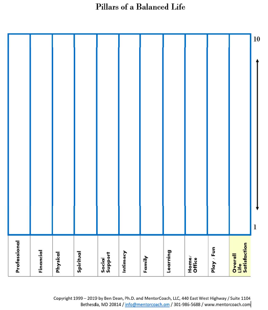

5 Tools
5.1 Powerful questions
Irene Nizzero, MCP 236, March 11, 2020 @ 4 PM - 5:30 PM
Powerful questions are short, simple, and direct. They make someone ideally think deeply, reflect, but also self-reflect. They lead to discovery, further insight, and perspective for the individual. We want to ask the kinds of questions that will be revealing to our clients that helps them unearth something that they so far had not thought about. A powerful question is open ended and should have multiple answers.
- Closed ended
A yes no question is a closed ended question as it only has 2 possible answers and stops the dialogue. Examples of closed ended questions:
When did that all happen?
Powerful questions don’t have to complex, long, or convoluted. In fact, the shorter and more concise the better. They often have no more than five to seven words. Coaches should ask questions like a 4 year old would ask. Also, take your time. Silence is an okay thing in coaching. If it takes you a moment to formulate a powerful question that is okay. There is no harm in saying I am going to need a second to think about this as the coach. It is encouraged to give our clients space and in so doing gives them the opportunity to think through things as well. A good coach will not ask questions one right after another (called “stacking”). A bad coach does not give the person a chance to answer anything until they have put out 2 or 3 questions. The coach should give ample time for the client to answer each individual question. In as much as possible we try to use the client’s language. If they say, I have been feeling like a fish out of water at work. We might start with something like well tell me a bit about what is it to feel like a fish out of water or when you say you feel like a fish out of water, what does that mean to you. The questions do not contain judgment. We want questions that we can ask freely, with no attachment to the answer. You want to ensure that people recognize that coaches are asking with genuine curiosity. It is very important that the client does not feel defensive or interrogated.
Examples of powerful questions:
What is the truth about this situation?
What assumptions might we be making about this situation?
What would you guess is your boss’s perspective on your work?
What values do you think your team member will bring to this conversation?
What do you (see, hear, feel, sense)?
Where are you right now?
Where to you want to go from here?
What makes that important to you now?
What would happen if you took ownership of this?
What do you think is behind that?
Wow, your voice picked up in speed and volume, where is that coming from?
When you start a question with “can you” there is a chance that the answer could be yes or no.
Can you think of a situation that may be coming up in the near future where you would like to say no and you feel like you might have trouble with that?
Can you think of some ways to say no that would still allow you to express love and fairness and your other strengths?
Better to rephrase it as:
When you think about a situation that may be coming up, wherein it may be difficult to say no, what did you know now that you didn’t know earlier or how might you approach it differently?
My intuition tells me that you could come up with a way to say no, that would still allow you to feel like a fair or kind or loving person. What do you think of that or what is your response to that?
Why do these kinds of questions work so well in the coaching process? Because they:
- Invite the client to look at new possibilities from within themselves;
- Encourage the client to see the coach as collaborator and not expert;
- Show clients that they are special and respected
- Build trust by creating an openness to exploring ideas outside their “boxes” with a playful attitude;
- Invite clients to be introspective and creative;
- Demonstrate the curiosity and nonjudgmental attitude of the coach; and
- Encourage the coach to remain open-minded and to see the client as a “whole, resourceful, creative” being.
Powerful questions can be jarring. It is best to forewarn your clients, well in advance, that you are about to ask a jarring question. Example:
Prefacing jarring questions by saing, “This might feel a little bit like a 2x4 between the eyes.”
Sometimes powerful questions and evoke strong emotions. You should acknowledge the emotions - I see that this is bringing up a lot of emotion for you. Honor the fact that the person is experiencing it, and absolutely give them the space to experience it. Do not to rush them through it. It may get to the point that the person is so overcome that coaching would no longer be effective. Always ask if the client is okay to continue. If not, then make sure the person is okay and say that you will connect again next time. When you have developed a strong enough connect with the person, you may also pause and ask if there is anything they would like to share about it.
Sometimes the powerful question can lead a client to shut down and give you an I don’t know. The best question is something like-
Well, what would you guess, what would your best guess be, or what do you think might work or think might be possible.
Why has the potential to open up a lot of exploration but we tend not to use it. I use it in very specific circumstances because if you ask something like “why do you think you struggle with that” it sounds like blaming. The exception would be like:
Why might it be okay for this to happen?
5.2 Inquiry
Irene Nizzero, MCP 236, March 11, 2020 @ 4 PM - 5:30 PM
This term refers to a powerful question given at the end of the session that is intended to deepen the client’s learning and provoke further reflection. The intention is for the client to use the end of the coaching session to open up deeper inquiry into the client’s situation until the next coaching session. You use inquiry in a situation when a theme keeps coming up or there is something deep and powerful that the coach would like the client to reflect on between sessions. Basically what happens in an inquiry situation is at the end of a coaching session, you might say my gut or intuition is telling me that this whole topic is loaded for you. What I would like to do is propose an activity for you to consider between now and our next session and for you to do some reflection on. Ideally, it would include the client spending some time doing some actually writing or journaling about it.
Out of today’s session, we might come up with something like “who do you have to be to be someone who can say no without worry or retribution or who do you know who has the power to say no well and what is important about who they are and what qualities stand out about that person.” Then ask them to journal/write about the question.
This “inquiry” kind of powerful question: + Is intended to help the client explore something in depth and create awareness; + Involves introspection and reflection without an expectation of “being answered” + Is powerful because it integrates coaching into the client’s daily life; and + May involve activities between sessions such as journaling, drawing pictures, talking with family or friends, etc.
When you provide an inquiry that is accepted by the client, always ask the client about it during the next session. You can even ask the client to share any learning they get from it prior to your next coaching call.
Examples of this type of question are:
“What is it that you are tolerating?”
“What is it to be undauntable?”
“What is the challenge?”
Please remember that because this is a suggestion made by the coach, ask permission of the client to offer this kind of action item; if the client says no, accept their response without defensiveness. It is entirely up to the client to even accept the activity and be willing to do it. Then it is up to the client to carve out how much time.
5.3 Listening
Irene Nizzero, MCP 236, March 11, 2020 @ 4 PM - 5:30 PM
As a coach, you make the most impact when the client feels heard.
Level 1: we listen while formulating another answer, question or something else. Clients are mostly in this level.
Level 2: we are focused on what we have heard. We are hearing and then responding, and not thinking while the client is speaking.
Level 3: the coach is able to hear what is NOT being said. They are so absorbed in what the client is saying that they are able to notice changes of expression, heightened energy, or faster paced speech, louder speech, or more animated speech and perhaps include this in their dialogue.
Coaches usually start the session in Level 1, slip into Level 2 and 3, and then periodically back into Level 1. Ideally, we want to spend as much time in Level 2 and 3. Powerful questions, giving the client the space that they need, and being fully present with a client doesn’t happen in Level 1 listening. Coaching only occurs in levels 2 and 3. Usually the most powerful coaching, the strongest connection between coach and client, occurs when the coach spends as much time as possible in Level 3. We have to, occasionally slip back into Level 1, because we have to do other practical things. We have to keep an eye on the time; we have to make sure that we are moving forward in the conversation; we need to be clear that we stayed with the clients agenda. The client can feel the shift of energy on a call when the coach goes into Level 1. The client will sometimes ask “Are you still there?” because they feel the disconnect. Always own up to losing focus; it will build trust.
5.4 Inner Critic
Irene Nizzero, MCP 236, March 18, 2020 @ 4 PM - 5:30 PM
There are many ways to describe it, one is, it is an internal dialogue that you sometimes get, often in advance of or as you are approaching challenging situations. Everyone on the planet has an inner critic to some extent. The people that you see walking around who are very confident, solid, intentional, calm, unflustered, full of themselves have just learned to manage their inner critic very well. It’s the reason we get nervous. Sometimes it comes as an afterthought. I it is usually not helpful, and not necessarily what you need at that moment.
The purpose of the inner critic, at its core is to try and prevent you from falling on your face. It doesn’t want you to blow it like a fool. We want to be clear with clients that at it’s core the Inner Critic has usually good intentions but at the same time the inner critic is quite often a liar. Hints that the Inner Critic is coming up includes anything that speaks to doubt, insecurity, inability or lacking capacity to do something.
- Examples of Inner Critic comments
I am ill equipped to make the right decisions
What were you thinking?
I can’t do this.
I don’t know if I am good enough.
1) Start with am I hearing an Inner Critic
This feeling of not being good enough or this feeling of being an imposter sounds like an Inner Critic to me.
What I am hearing is a variation on I am not enough or I am not good enough.
2) Always follow up with, what do you make of that?
Do I hear an inner critic?
You almost always do.
3) Then you have a few options.
How would you like to handle your inner critic?
What do you want to do with this inner critic right now?
What would you like to do to contain that inner critic right now?
If they don’t know, there are a number of different ways to tackle this:
I have a few ideas, would it be okay if I offered one of them?
Ask, what is the truth?
Desccribe what inner critic looks like.
Oftentimes, silencing the inner critic is easier if the client helps to personalize their own inner critic. Some people see them as an animal or a mischievous little child, even an overly critical parent! The Inner Critic can be the voice of someone was or is important to you or it could be you letting fears or insecurities surface.
- Draw it out or find a picture on the internet. Find the thickest possible book you have on your shelf and and take that piece of paper and stick it into a book. So that the inner critic is otherwise occupied.
If we are talking about an action that they are planning to take. Then, I will invite them to find an image before they start their action. It is not an inquiry because you are not asking them to write, think, or reflect on it. You are asking them to put the inner critic out of the way.
- Inner Critic –> ally
Explain that the Inner Critic is trying to protect you and trying to prevent you from falling on your face. But you have the skills, so what if you were to say to the inner critic instead I don’t need an inner critic right now, I need an ally.
Instead of an inner critic who would you rather have in your head?
What would an ally be saying to you?
What would that person be saying?
Once you develop a bit of a repertoire for dealing with the Inner Critic, whether it is asking what is the truth, getting them to create a visual or tangible representation, putting it away somewhere, or asking them what would you rather have in your head instead of an inner critic’s voice. You can use your client’s favorite way of dealing with their inner critic.
How would you like to deal with that inner critic?
There are options galore that come over time working with someone.
5.5 Intuition
Irene Nizzero, MCP 236, March 18, 2020 @ 4 PM - 5:30 PM
Intuition can help clients move into action or deepen their learning and awareness. Intuition is the “sense” about something unspoken. Intuition is the inner knowing, the sixth sense as a result of active, deep listening. It is the expression of observation rather than a conclusion.
Coaches take their intuition from the clients’:
- energy
- tone
- mood
- spoken words
- unspoken words
Level 3 listening provides coaches access to their intuition and allows them to offer insights to their clients. Intuition is a gut feeling and a tool for awareness building. It is connected to deep listening, because intuition happens when you are listening between the words and inferring from what they are saying that there is something deeper going on.It is not about what words you are hearing rather it may be related to body language, expressions, or something else that you are picking up other than what the words are conveying to you. It is not based on hard evidence. It goes beyong articulating or mirroring back what the client has said, you add something that you are perceiving NOT from the clients words.
You cannot access intuition without using Level 3, or at the very least Level 2 listening.
1) My intuition is telling me …
I have this sense that …
I have a feeling that …
2) … how does that land with you?
… what do you think about that?
… how does that resonate with you?
… what do you make of that?
You are allowed to be wrong. Be prepared to offer it but also be prepared to be wrong. The client may well say- well I am not really feeling guilty as much as I am making decisions or taking actions. I am feeling more inadequate, or it’s more about fear, or I have more of an imposter syndrome at play here. Regardless of where they go, they will give you more to work with. Even if you are wrong, chances are it will lead to further discovery and that is the point.
3) Explore the situation.
4) Ask questions about how to change course.
Using intuitions can lend to very powerful, potentially powerful insights. Then you can ask questions like:
What does that awareness mean to you now?
Irene Nizzero, MCP 236, March 11, 2020 @ 4 PM - 5:30 PM
It is a bit of a cheat. It is the little give that we have in the coaching dynamic, but has to still came from what the client volunteers and has to help advance the conversation.
5.6 Metaphor
Irene Nizzero, MCP 236, March 18, 2020 @ 4 PM - 5:30 PM
A metaphor is also considered an analogy and usually involves the word “like.” You are basically creating an image, an idea, a concept that maybe captures everything that you have been hearing. Many times, the use of metaphor can deepen the client’s understanding of themselves and their situation.
- Sometimes we offer them.
If you sense a metaphor that might work for your client, simply share it without explanation or permission; providing an explanation puts the coach into Level I listening!
Does it feel like …
I am getting an image of …
- Examples of Metaphors
Life is like a box of chocolate you never know what you are going to get - Forrest Gump.
What I am hearing is making me think of an image of a tsunami and you are struggling to somehow get to the surface.
What I am hearing it is like a desert storm and things were swirling around you.
It’s like golf. The harder you swing doesn’t mean the ball goes further. Sometimes when you swing easier the ball goes farther.
Bamboo takes ~13 years or 7 years for it to sprout and then grows 15 ft. in the first month. There is all this stuff happening that you don’t see.
Does it feel a little like you are on a sinking ship.
Lost at sea with a ship with no rudder, no compass, no steering mechanism.
It is like I am in a furniture store and someone has turned off all the lights. I am trying to find my way through and I keep bumping into things but do not have any help.
Tree analogy for relationships, as long as you have roots you won’t be carried away. Others include getting the ripe fruit, nurturing the tree the right way with positivity.
Bandaid instead of dealing with the underlying issue.
Nailing your foot to a sinking ship.
Ride the wave. I have to get on it. I don’t know where the wave is going to go. I sort of know the direction and I have to go with it and pay attention because you are going to go under water if you don’t.
- Sometimes we ask for them.
Is there a metaphor that you can think of that would apply here?
If you need to, you can certainly explain what you mean by that. Idea is you are going to either offer it, or ask for one, preferably asking for one and so many times clients will offer it even without you asking.
- Other times we have to be listening close enough for them.
Somewhere along the way, they may say something like I am just juggling so much right now. It is not exactly a metaphor but it does lend itself to one. It could be something like I just feel so lost right now. That opens up all sorts of possibilities and so in as much as possible you are going to listen for the client’s tips, and hints at what a metaphor would be like. Use the client’s metaphor whenever they offer them.
Always ask, how does that land with you?
Explore the situation.
You start to explore more about their situation based off of that metaphor.
- Ask questions about how to change course.
What is the thing that is going to help you change your course
What is the first thing you need to do to change that?
What do you want to do with this and to change this situation?
A metaphor isn’t giving advice, it’s just putting more context around a situation and then you are also exploring with them how that metaphor can play out. In a manner of speaking it kind of detaches the client from it - from the emotion and they can see it from a 3rd party perspective.
5.7 Coaching Presence
Irene Nizzero, MCP 236, March 25, 2020 @ 4 PM - 5:30 PM
As explained by the ICF, coaching presence is the ability to be fully conscious and create spontaneous relationship with the client, employing a style that is open, flexible and confident. Coaching presence is the outcome of the coach connecting as deeply as possible as with the client. This happens as a result of listening and being sensitive to emotion, energy levels, behaviors that you might see. There all sorts of body language instances that we can call out and actually perhaps question depending on where the conversation is going. It’s that whole thing about you being so fully present with your client, that your house or office or wherever you are could crumble around you, but you wouldn’t notice because you are totally with that person, that is real coaching presence.
One of the key factors to achieving a great working relationship with clients is developing trust, and coaching presence really goes a long way to developing trust. However it is more than just listening, it goes to your responses being very attune with what your client needs at the time. Coaching presence is the ability to be fully conscious and create a spontaneous relationship with the client employing a style that is open, flexible, and confident.
Confidence comes with practice. Flexibility is that riding the wave. It is like man I have to absolutely go where this wave is taking me, no preconceived notions, and being totally detached from any set plan or expectation of where you are going to get to.
You are letting this person be who they are and you are just walking along with that.
Features of effective coaching presence include
- Being present and flexible during the coaching process - “dancing in the moment.”
- Accessing your own intuition and trusting your inner knowing.
- Being open to not knowing and takes risks.
- Seeing many ways to work with the client and choosing in the moment what is most effective.
- Using humor effectively to create lightness and energy.
- Confidently shifting perspectives and experimenting with new possibilities for own action.
- Demonstrating confidence in working with, and not being overpowered by, the client’s emotions.
Coaching presence is at its best when the coach and client: + Enter a state of flow and experience feelings of timelessness + Flow by Mihaly Csikszentmihalyi + Sense the dynamics of flowing energy + Have clarity and their minds are clear of all distractions + Create this environment collaboratively
You want to be mentally present for session. Think of ways to mentally and emotionally prepare for a session, when you are about to start coaching someone. Lots of people talk about getting centered, clearing their own minds, as the coaches. Anything big, whatever it may be, gets put on a shelf and put away for the time being. It could be doing some mindfulness practice, some deep breathing, mediation, whatever your practice might be to help you do that, that is a really strongly recommended approach to fully engage and connect with your client and be there for that person in the session.
Being Receptive to Energy, Emotion, & Behavior
The concept of being receptive to energy, so energy, emotion, behavior, those sorts of things and we call it sometimes tracking energy or picking up on energy. Behavior can be what you observe or what they describe to you that they did.
Be attentive to changes – shifts – in a client’s energy, their emotional expressions, and any changes in behavior that they share with you. Remember that as a coach, you are a mirror and state simply what you hear or see or notice. Offer your observations without judgement and ask the client to confirm what you are hearing or seeing. This kind of coaching creates a sense of respect and safety which leads to coaching presence where transformation becomes possible for the client.
I hear a catch in your voice. What are you feeling right now?
The pace of your speaking just picked up. You sound more energetic. What caused this change?
Wow! That’s a very different behavior for you. Tell me more about that, what is behind that, or what is going on there do you think?
Understanding the Power of Silence
The opposite of offering observations is not saying anything at all. Being silent is a crucial part of deep listening, as it allows the client the space and time to think and process thoughts. Silence, this also really denotes a deep respect for your client. In the sense that you are kind of giving them the space to process things at their own pace. To let them come to things as they need to without the feeling that you have to rush things along.
Clients should talk about 85% of the time, part of the 85% can be silence if the client needs time to process and answer questions.
Coaches only 15%, part of the 15% can be silence if the coach asks for some to come up with a question.
Markers are the behavioral signals, that a coach is applying this competency. There is actually a marker that speaks to a coach allowing silence.
It is NOT at all in appropriate to say I am going to need a second to think where I want to go next as the coach.
How to Develop Effective Coaching Presence
- Take risks
- Ask hard questions
Who really owns that decision?
What is your responsibility here?
What if they disagree with what you think? You don’t think it is their responsibility but they do. Again, I might be going with my gut. I am going to ask the question because I think that might reveal something telling. I could be wrong, in which case I say okay great and then move on from there. There is no attachment to me being right. I took a shot on that one, I was wrong next question.
- Pull client out of comfort zone +Challenge client’s inner critic
- Create safety
- Show respect
- Ask permission
I have a piece of information that might be helpful here. Would it be okay if I shared it with you. Or, I have something in mind that would be relevant here, would it be okay if I shared it with you? This is especially relevent when you have spcialty coaching training - health and wellneess, ADD, or Executive coaching.
If it is something that you are offering your client, you always ask for permission. Leave it out there and it is completely up to them, when they do it, if they do it.
The general rule with following up is - if they want to let you know they took what you offered they will tell you. You can ask but there is really no need to ask.
- Understand client’s values
This is where trust comes in.
- Use humor
- Let go of:
- Control
- Expectations
- Assumptions
Sometimes I think, if I ask this question this is what I am going to get. I love being wrong about that because then the client has really heard the question and processed it and that now probably gives us a whole other area to explore.
- Let go of:
- Walk with the client through their struggle
- Clarify client’s agenda
- Focus deeply on client’s agenda
Okay well this is a little different from where we started the agenda are we changing the agenda, or how does this relate to the agenda that you shared towards the beginning.
This is what you said you were looking for, where are we now. That helps the client also take stock on where you have gotten to.
Things to Avoid When Creating Coaching Prescence
- Becoming a “sponge” for your client’s emotions
You want to remain detached. Can’t be exhausting or grueling to take on everything your clients are feeling.
- Forgetting or dismissing or directing the client’s agenda
- Imposing your own values and judgements
- Relating your own personal experiences
Sometimes after working with a client for a long time, they will ask have you ever had this happen to you. To ignore that or deflect it I think almost might be kind of rude. So I might then answer. But our experiences don’t matter, because what we are aiming for is focusing on the client and to help the client get to where they need to go.
If ask what would you do, in the begining it is best to deflect. I would say, I think what is more important here is how we can help you arrive at what is going to work best for you.
5.8 Pillars of a Balanced Life
Irene Nizzero, MCP 236, April 22, 2020 @ 4 PM - 5:30 PM
Sometimes clients clearly want better things for themselves and have a sense that there are things that they could be doing different, better, more thoroughly, but they don’t know what it is that they want to do. They feel like, I have all of these different areas that I want to improve and I don’t even know where to start. The, I don’t know where to start phrase is an ideal one to bring out the pillars.

You can have the client fill it out on their own outside of the session or you can do it together as a coaching session. In the span of an hour session, the pillars might be all that we cover on that particular day.
Irene’s personal preference is to fill it out together. She will fill out her own copy for her records. Say, I have this great tool, if you are unsure about where you want to go next, and it will help you narrow down your priorities or atleast organize your priorities in such a way that you will get a good at a gland perspective on what really matters to you. It may provide direction of what you want to do next.
- Would that be of interest to you?
Then, it is up to the client to decide.
- The client rates themself, 0-10 or 1-10, in each pill of Life. With 1 being extremely dissatisfied and 10 being couldn’t ask for more. The person is essentially reflecting on every one of these pillars and ranking it on a scale of 1 to 10, where they sit currently.
You may go through it and explain the labels or you may just let them sort of bounce around.
Irene prefers to invite clients to start with whatever category speaks to them that they want to start with and if they don’t have preference then just work through it left to right and go column by column.
Have the person imagine each pillar to be thermometer, with 10 at the top, and have them draw a line and also write the number that they are intending to reflect there.
Affirm whatever rating they give.
If they give themselves a 9 or 10, be sure and affirm them to being able to do that. Many people cannot give themselves that amount of credit!!
Explain the columns
This is according to the client and where they would like to be. Where they imagine a 10 to be and where they are relative to that.
Spirtual includes anything the client does to ground themself, to center themself, bring peace or calm to their life. Any of those sort of practices and things such as yoga and meditation.
Intimacy not only in a romantic relationship. Do they have a best friend in life ad how is that relationship going. Intimacy doesn’t have to only speak to physical intimacy.
Home/office refers to their physical surroundings and their physical space. Are their home and or office meeting their needs. Is there something you would like to change in that area?
Play and fun is something they do for the sheer pleasure of it.
Pillars of Life can be brought out at any time.It could be well into the relationship and they just end up feeling stuck. They know there is more that they want to do they just don’t know how to move forward.
The tool can be adapted and changed. You can put your own labels to it. Remember to give credit to Ben Dean, founder of MentorCoach. This is a great tool to use to help people to get a demo of what coaching can be like.
The lowest number doesn’t necessarily equate to being the most important or critical area to work on right now for the client. Just be mindful that that is quite normal, understandable, and acceptable.
In terms of that last column, Overall Life Satisfaction, Irene doesn’t include this column when she uses the tool.
Ask questions.
- What does success look and feel like for you in this area?
- What would make that a score of 10?
- What would a score of 10 look and feel like?
- How do you feel about your life as you look at that pillar?
- What would it take to increase your rating by ½ point?
- How could you make space for these changes?
- Can you affect the necessary changes on your own?
- What help and cooperation from others might you need?
- Is that something you can do?
- Is this something you want to commit to?
- How long with it take to get it done?
- How will you hold yourself accountable to complete it?
5.9 Championing
Irene Nizzero, MCP 236, April 29, 2020 @ 4 PM - 5:30 PM
Championing refers to a situation where you client is facing a gargantuan challenge or it is at least described that way by the client, and the coach cheers on their client on in that moment of challenge or difficulty or extraordinary pressure.
For example, asking for a raise that was previously rejected, or being a keynote at a conference.
- Have the client imagine the coach physically being there with them and cheering them on.
Tomorrow, while you are in this presentation to imagine me sitting there smiling and supporting you.
5.10 Celebrating
Irene Nizzero, MCP 236, April 29, 2020 @ 4 PM - 5:30 PM
As a coach, celebrate everything! Is is really important that people make a conscious effort to acknowledge their own successes, and often that can be with your help acknowledging them. Every single session when you are working with a client there is almost certainly going to be something to celebrate. Celebration is about recognizing what the client has done, while acknowledgement is about who the client is in their being. Remember, failure can represent significant progress forward and can be celebrated as well. Make a big deal of celebrating that with that person. You can do it with them in the moment or you can invite them to think of a way to celebrate this particular milestone.
- Ideally there is something physical about it.
You might have them put their hand up to the computer and give them a high five
You might have them do a happy dance around the room.
My coach had me stand up as if I was stepping up on to an olympic podium and take a bow.
Celebrate in the moment. It is most effective delivered close in time to the accomplishment of the client and can become a part of your ongoing relationship with the client.
If in the moment/physical is not possible, it can be an exchange between the two of you. But it is also where you can say to the client, how will you celebrate that success and can I do it with you.
I want to know when you are successful, what is your plan for celebrating that success. I am going to go down to a beach and I am going to bring a drink with me that has an umbrella in it and I am going to toast my success. Can you get someone to take a picture, or take a selfie and please send it to me so I can celebrate your success with you!
One easy way to do this, is to make a big deal of any piece of progress if your client gives you an update at the start of your sessions.
This is important because, as humans we focus on the negative. Our workplaces, lives, how we engage with each other, etc. are not geared towards positivity. We have to really be conscious of positivity to try and build it in. As a coach who is trying to encourage positive change, part of your role is to support your client and you might be one of the few people in that person’s life to ever say a positive thing to that individual. Doing this also helps to build more of that bond and trust with our client, acknowledges that you have heard them, and that you are recognizing their great effort.